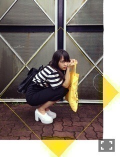

| 2014/07 29 Tue | 光る炭酸水。588回目 |
さて、一昨日私が熱く語って
みんながドン引きした
乃木どこの尊敬する人グランプリ。
細かく説明すると...
椎名林檎さん。
初めて曲を聴いたとき衝撃的でした。
それからMV、ライブの衣装も演出も
センスも抜群でセクシーで可愛くて
大好きになりました。
ソロで好きな曲は挙げたら
切りが無いですが、
東京事変で一番好きなのはMV含め
今夜はから騒ぎ！
バナナと林檎だからね！
じゃあ私はいちごだったら
よかったのかな←
タヴィ•ジェヴィンソンちゃん。
ずっと前からブログを
拝見してたファッショニスタ。
彼女の作り出すものの独特さが
とても素敵なのです。
世界中が認めたおしゃれさん...
本もしっかり2冊あります。
永戸鉄也さん。
ずっと前に見つけた
コラージュ作品に惹かれたのですが、
それが永戸さんの作品でした。
それから更にいろいろな
アートワークに興味を持つようなり、
いろんなアーティストさんの
作品を積極的に調べて
見るようになったんです！
真面目に答えると
3人にはしぼれず...
資生堂の中村誠さん
あちゃちゅむのしんやまさこさん
青木むすびさん
尊敬しています。
勉強になる！
＼あうとふぃっと／
ペンシルスカート挑戦した〜
お母さんのだけど、、
なかなか楽ちん。
あと、おなじみの靴とリュック。
PASS THE BATONのエコバック。
このTシャツは3年前くらいに
展覧会に行って売ってた
作家さんの一点もの！
袖のダメージが素敵。
かわいいけど、買って、
どう着たらいいかわからなかったの。
3年経ってやっと着れた〜

ネックレスもかわいいの。
パールのにこちゃん
...
乃木のの聴いた？？
伊藤ちゃんずにひめたん！
楽しい〜
もっとしゃべりたかったよー
しかしたまになる私への対応
ブラックひめたん...
きゅんきゅん王国のみなさん助けて
アンダーライブの感想
ありがとうございました！
ツアーのリハも頑張ります。
次はもう10枚目か、早いなあ

昨日は撮影だった！
ずっと楽しみにしてたもの〜
衣装素敵だったー
はあー幸せ。
まりか
コメント(513)
2014/07/29 16:42